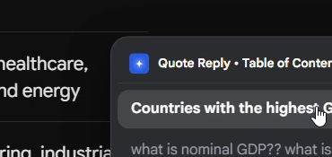
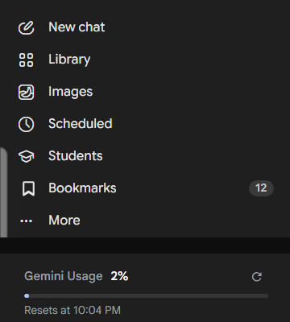
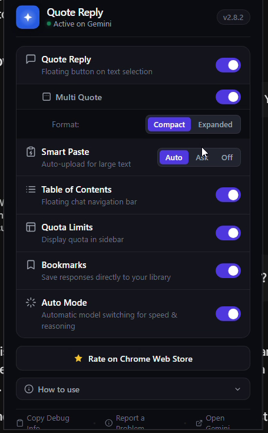

FEATURES
Everything Gemini is missing.
Quote Reply is the core. The rest of the toolkit works on its own, so switch on only what you use.
01 / QUOTE REPLY
Highlight, then reply.
Highlight any text in a Gemini response and reply with that exact context locked in. A floating Ask Gemini button appears the moment you select, and Multi-Quote lets you reply to several passages at once.

02 / CONTEXT
Pinned, then traceable.
A context chip pins your quote to the reply bar so Gemini never loses it, and every reply shows its source text inline so your chat stays traceable.

03 / TABLE OF CONTENTS
Jump anywhere in a long chat.
A live index of every prompt in your conversation, so long chats stay easy to navigate.

04 / SIDEBAR
Bookmarks and usage limits.
Save responses directly to your library, and see your Gemini usage and reset time right in the sidebar.

05 / ONE POPUP
Switch on only what you use.
Smart Paste offers to send a huge block of text or code as a file, keeping your prompt clean. Auto Mode handles model switching. Turn each tool on or off in one popup, with light and dark mode.

Highlight.
Reply.
Add to ChromeReply.